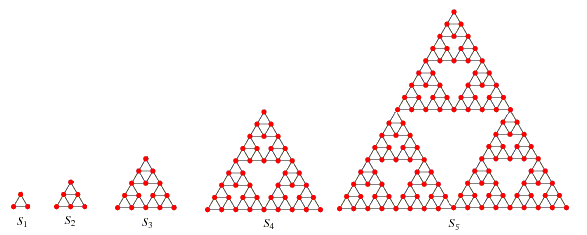
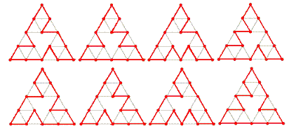

- A
Sierpiński graph
of order-$1$ ($S_1$) is an equilateral triangle.
- $S_{n + 1}$ is obtained from $S_n$ by positioning three copies of $S_n$ so that every pair of copies has one common corner.

Let $C(n)$ be the number of cycles that pass exactly once through all the vertices of $S_n$.
For example, $C(3) = 8$ because eight such cycles can be drawn on $S_3$, as shown below:

It can also be verified that :
$C(1) = C(2) = 1$
$C(5) = 71328803586048$
$C(10\,000) \bmod 10^8 = 37652224$
$C(10\,000) \bmod 13^8 = 617720485$
Find $C(C(C(10\,000))) \bmod 13^8$.
main: solve() → █
Solution pending... the mathematician is still thinking.
Nothing here yet - come back when the dust has settled.